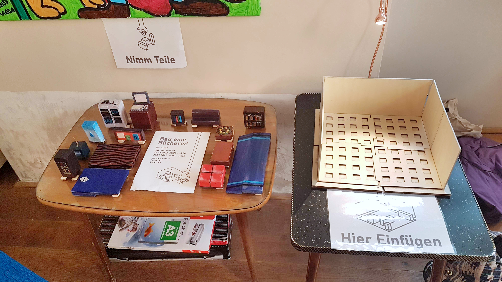
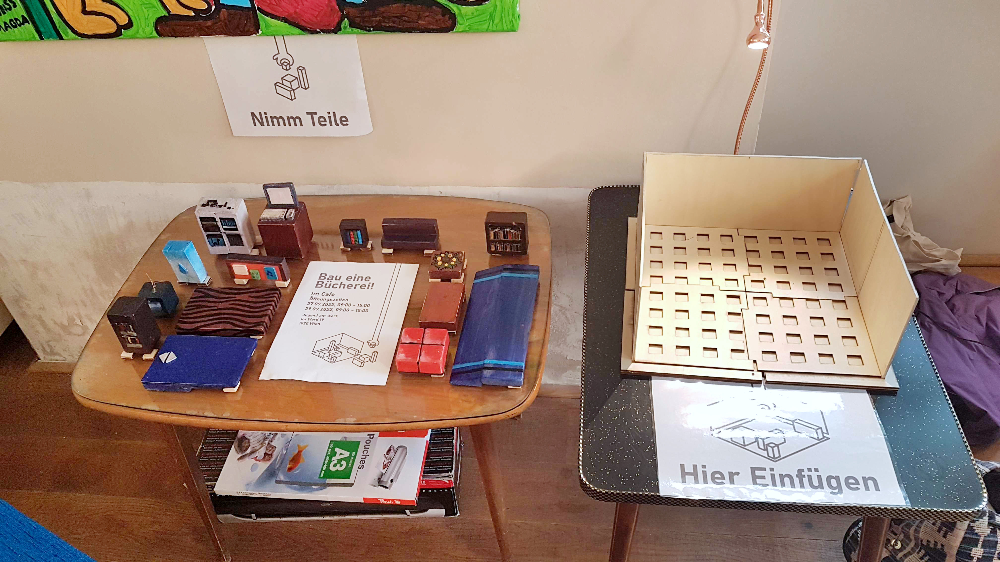
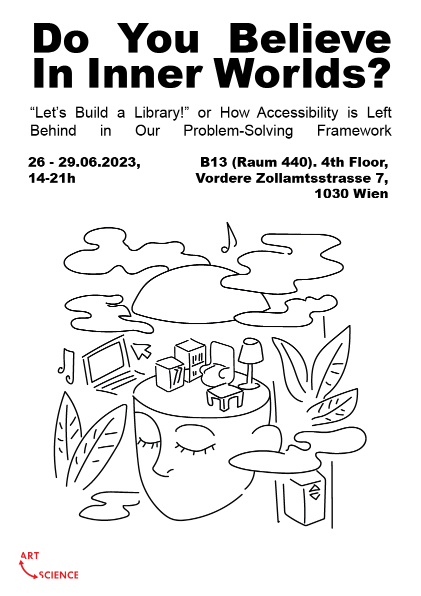
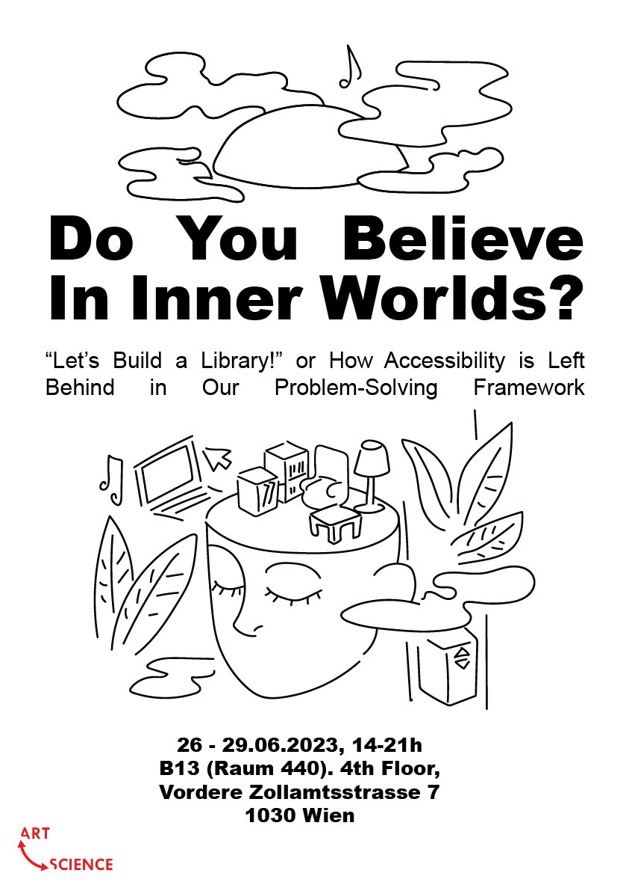
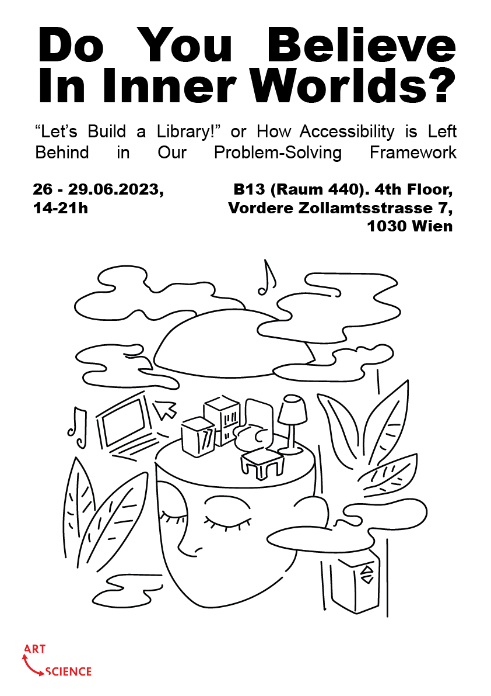
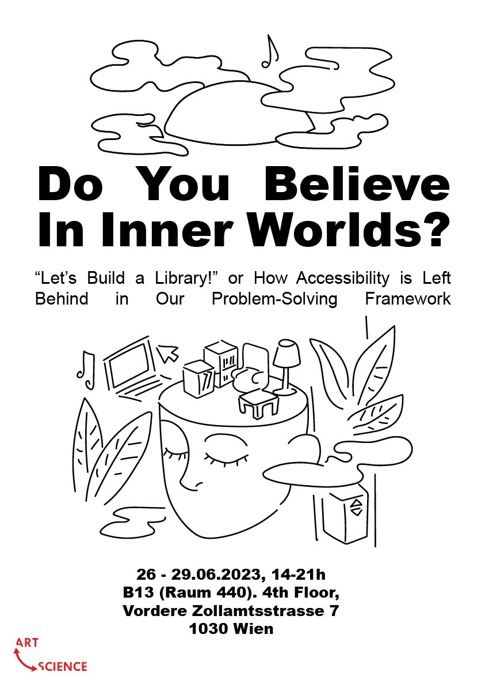

Bauen Wir ein Bücherei!
Project Overview
16 Monate / Masterabschlussprojekt / UX Research, Grafikdesign / Solo Projekt
Ein Puppenhaus in die man eine Bücherei baut. Spielzeug Puppenhaus aus leicht findbare Materiellen gebaut. Braille Etiketten auf die Möbeln, Posters selbt gedruckt und geklebt. Die Prototype in der Masterabschluss und den Angewandte Festival Sommer 2023 präsentiert.
Entdeckung und Problemstellung
Während meiner Forschung fand ich dieser Dissonanz zwischen wie wir über Barrierefreiheit denken und wie sie im Ort implemtiert ist.
Nach Qualitative Recherche, in dem ich Studien und Berichte von verschiedene Menschen durchging, und Beobachtungen fand ich heraus dass,
- ein konkretes Pipeline, in dem Barrierefreiheit in der relevanten Studiengänge nicht eingebettet ist.
- Menschen nicht viel über Barrierefreiheit wissen, oder zumindest die Idee kennt aber nicht den Namen.
- wenn Menschen Sachen bauen oder entwerfen die das Leben einer Menschen einfacher machen könnten, verknüpft man dieser Erschaffung mit Faulheit.
Das Warum für die verschiedene Punkte hat auch verschiedene Erklärungen. Dies kann von den Mangel an Personallen die mit Barrierefreiheit beschäftigt bis zu ein Mangel von Informationsvermittlung bis zu die Verknüpfung zwischen Gesundheit und Moralität.
Grundsätzlich, die Hauptfrage ist wie kommt man zu diesem Punkt? Was sind die Merkmale eines Atmospheres, die über Barrierefreiheit as letztes denkt?
Öffentliche Forschung
Szenario
Ob zu wissen ob die Frage die Beantwortung wert ist, gestalte ich eine Szene bzw. ein Puppenhaus in dem Barrierefreiheit zuletzt gestellt ist. Für diese Szene habe ich eine Bücherei gewählt, weil es ein öffentlicher Platz ist und daher auch der Regierung ist für ihre Barrierefreiheit verantwortlich. Zusätzlich haben Büchereien viele Nutzten und durch ihre Vielfalt wird verschiedene Antworten bekommen.
Was wichtig zu sehen sind die folgenden Punkte:
- In eine Situation wo Barrierefreiheit am letzten gedacht wird, ist sie verhandelbar.
- Das es verschiedene Möbel gibt aber alles nicht reintun kann.
- Das dieser Bücherei generell zu klein ist.
Fragebogen mit Prototypen
Für dieser UX Research baute ich die folgenden Prototypen nach jede Fragebogenzyklus.
 


Teilnehmern hatten die folgenden Fragen beantwortet:
- Ob Sie in einer Bücherei waren, wie es ist und wenn Nein, ob sie in dieser Arrangement so gestalten
- Was die wichtigsten Sachen in einer Bücherei sind
- Ob Sie an jemanden gedacht als sie den Bücherei gestaltet
- Ihre Meinung an den Spielzeug selbst, wie schwer es war mit ihm zu spielen und ob sie mit anderen oder alleine spielen
Das einzige Metrik ist dieser Fragestellung ist ob Teilnehmern über Barrierefreiheit denken bzw. ob sie eine Rampe oder Aufzug reinfügen.
Von 74 Antworten von dieser Fragebogen je nach Prototypgruppe,
- 60-80% war in eine Bücherei, und die die nicht da waren, sagten dass sie würden eine Bücherei wie sie in der Spielzeug gestaltet so darstellen.
- Die meisten haben Bücher und Sitzplätze als der wichtigsten Sachen genannt, und dann einige andere Sachen einmalig.
- 40-80% je nach Gruppe hatten an jemanden gedacht bzw. spezifische Gruppen wie Freunde, Familie, Arbeitern. Anderen hatten an sich selbst oder niemanden gedacht, und ein paar habe nicht and jemanden gedacht.
- 60-95% hatten eine positiven Reaktion zu dieser Spielzeug.
- Durchschnittlich hatten die meisten davon eine Rampe oder Aufzug reingestellt, manchmal beide.
- Zwischen eine Rampe und ein Aufzug, bevorzugten sie eher eine Rampe.
- Wenn ein Aufzug oder Rampe als Eingang benutzt wurden, hatte die Rampe mehr häufiger gestellt als den Aufzug.
Projektausstellung
Für meine Ausstellung habe ich ein Raum reserviert. Dazu brauchte ich ein Poster um mein Raum zu veröffentlichen. Für dies zeichnete ich ein Key-Visual für Marketing in der Angewandte Broschüren und Poster. Des Konzept der Ausstellung, "Do You Believe In Inner Worlds?" (Glaubst Du An Innere Welten?) bezieht sich aus der Feststellung, dass die Kategorisierung eines Ortes informiert auch ihre Nutzung und deshalb ihre Barrierefreiheit.
Branding
Für dieser Ausstellung erweiterte ich die Ästhetik des Textes. Weil Barrierefreiheit ein großes Teils des Projekts ist, ist es intergriert nicht nur als Schwerpunkt sondern auch als visuellem Element.
Als Teil dieser Ausstellung, habe ich auch eine Fragebogen gestellt. Die Erste fragt ob man über Barrierefreiheit in einer Bildungssituation bzw. in der Schule oder Universität, bei einem Kurs oder Weiterentwicklung in der Arbeit gelernt hat. Der Zweite fragt ob man von irgendwelche Strukturen die für Barrierefreiheit profitiert oder benutzt hat.
Poster Varianten

 



Die Poster und Flyers werden mit Braillesticker aufgehängt.

Abschlussprojekt Text
Als Teil des Abschlussprojektes gibt es ein künstlerische Komponent und ein Text-Komponent. Als Text-Komponent hatte ich mein These drucken lassen. Es wurde auch im Projektausstellung da sein, als ein Teil von meiner Arbeit in dem ich auch absichtlich über den Präsentation meiner These und ihre Barrierefreiheit denken. Dazu band ich auch Bücher die in Leichte Sprache mit Braille auf Englisch und Deutsch waren.
Auswirkung
Was das Projekt gemacht hat
- Im Projektausstellung lernte jeder Besucher etwas über Barrierefreiheit oder über die verschiedene Dissonanzen im Alltagsleben.
- Der Hypothese des Dissonanz zwischen wie man über Barrierefreiheit denkt, und wie sie implemtiert wurden, konnte durch ein Videospiel repräsentiert werden, jedoch Menschen fand der haptische und physische Spielzeug viel effektiver.